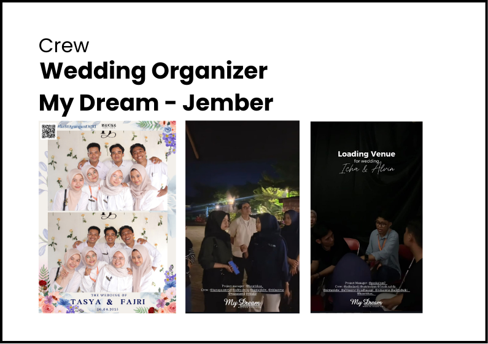
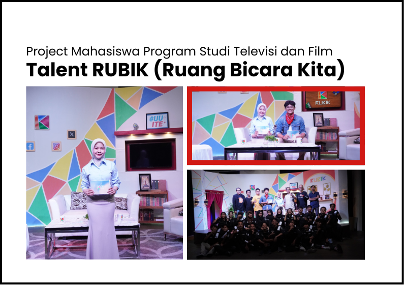
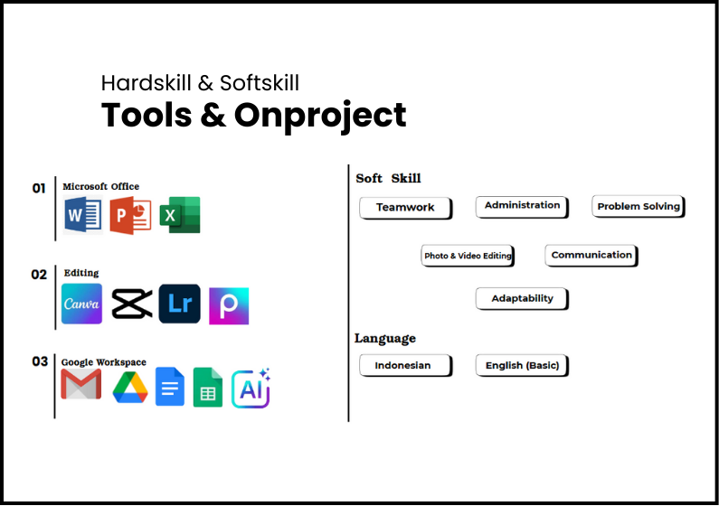

My Work



.png)
.png)

Saya adalah mahasiswa aktif semester 5 Program Studi Ilmu Administrasi Negara, Fakultas Ilmu Sosial dan Ilmu Politik, Universitas Jember, dengan IPK 3.88. Selama perkuliahan, saya aktif dalam berbagai organisasi dan kepanitiaan yang mengasah kemampuan di bidang administrasi data, kepenulisan, serta pengelolaan acara.
Selain
itu, saya memiliki keterampilan komunikasi yang baik, terutama dalam public speaking dan koordinasi
tim. Ketertarikan saya pada tata kelola pemerintahan, administrasi publik, dan manajemen organisasi
menjadi dasar dalam kontribusi saya di bidang manajemen risiko, ketatausahaan, organisasi dan tata
laksana, serta sumber daya manusia.
Berdasarkan kemampuan dan pengalaman yang saya miliki, berikut jasa yang bisa saya tawarkan :
Terbiasa melakukan input dan pengelolaan data strategis selama magang di instansi pemerintahan. Mampu menyusun laporan, rekapitulasi, dan dokumen administratif secara rapi dan sistematis.
Tidak terbatas pada pengelolaan arsip dan dokumen, saya juga berpengalaman dalam manajemen event dan organisasi secara efektif dan terstruktur.
Aktif dalam organisasi dan kepanitiaan, terbiasa menyampaikan pendapat, memimpin koordinasi tim, dan menyampaikan materi secara efektif dalam forum formal maupun informal.